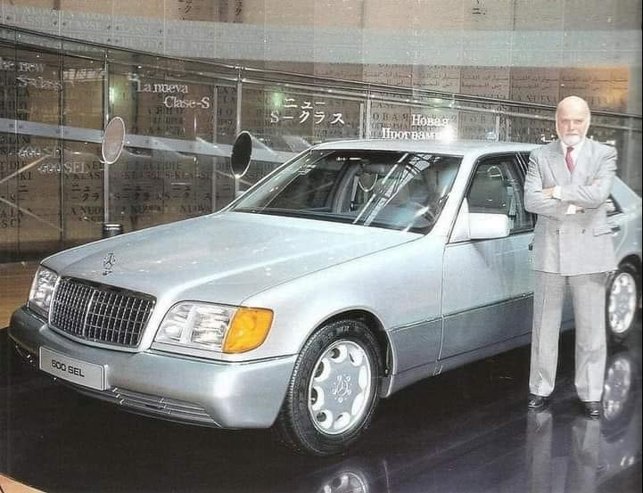
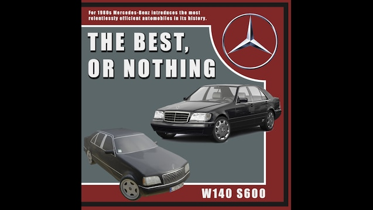
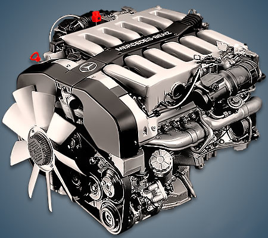

A comprehensive analysis of three luxury competitors
This is a college project
Top of the top. Mercedes-Benz W140
The Mercedes-Benz W140 is a series of flagship vehicles manufactured by Mercedes-Benz from 1991 to 1998 in sedan/saloon and coupe body styles and two
wheelbase lengths (SE and SEL). Mercedes-Benz unveiled the W140 S-Class at Geneva International Motor Show in March 1991 with sales launch in April 1991
and North American launch on 6 August 1991. All models were renamed in June 1993 as part of the corporate-wide nomenclature changes for 1994 model year on,
becoming "S" regardless of wheelbase length or body style as well as fuel type. Diesel models carried a TURBODIESEL trunk/boot lid label. In 1996, the S-Class
coupé was renamed again as CL-Class into its own model range.

Bruno Sacco. Designer of the W140
The development on the W140 began in 1981, with official introduction originally set in September 1989. Several different design proposals were studied from
1982 until 1986, when a definitive design proposal by Olivier Boulay was selected on 9 December 1986. Several engineering prototypes were evaluated from early
1987, with the final exterior design locked in September 1987. The design patents were filed on 23 February 1988 in West Germany and 23 August 1988 in the United States.
The lead designer Bruno Sacco attributed Jaguar's XJ40 sedan and BMW's E32 7-Series as a major influence in W140 design.
Pure Luxury

The top end 600 SEL was so well engineered and constructed that it was also much more expensive and exclusive than the S Class sedan it replaced.
The Mercedes-Benz tagline of “The Best or Nothing” was never better exemplified than in the W140 S Class.
Rumor has it that Mercedes spent an exorbitant $1 billion to design and engineer the W140, more than the company had ever spent on a single model.
This is an amazing amount of money to spend on a new car model, but the W140 S Class was an amazing car. The W140 S-Class showcased unmatched levels of engineering.
Every small part was designed with the highest level of attention to detail. Even the smallest things like the panel gaps were so closely monitored during production
that they were uniform even on the curved sections of the panels. This tight build quality and the closely monitored tolerances ensured that these cars remained running
flawlessly even after years of use. Mercedes-Benz had kept tolerances extremely tight while manufacturing the W140 S-Class and this ensured the finest level of quality
in the final product.
The W140 S-Class boasts many cool features, among which is the power-operated rearview mirror. Because stretching your arm to adjust the mirror manually is for the plebeians,
Mercedes has given you a third setting on the mirror adjustment switch, which is located next to the shifter. Moreover, the rearview mirror is linked to your memory setting,
allowing you to set all of your preferred driver settings with the push of a single button. This was an industry first even in the luxury segment and to this day, far from a
common feature even in the premium segment.
While designing the W140 S-Class, Mercedes-Benz gave special attention to all the things that increased passenger comfort and safety. In addition to numerous features that aided
comfort, it had many unheard-of features that made the lives of the driver and passengers simpler. This included heated and cooled front and rear seats and some more good-to-have
features like a rear sunshade. It also came with soft closing doors and a trunk lid that was considered a super luxury feature back then. The LWB models also offered a four-zone
climate control system. The regular version had a two-zone climate control system. In 1995, the S600 became the first car from Mercedes-Benz to feature a GPS navigation system.
It used maps preloaded on a CD-ROM and displayed them on a full-color display in the center dashboard. Another feature testifying to the W140's German over-engineering is the two
retractable, metal rods sticking out of the trunk.
Although looks are subjective, most people loved the way the W140 S-Class looked. It had a timeless design that allowed it to stay fresh even after years on the road. Also,
it fits in perfectly with the then design language of Mercedes-Benz products. This made it instantly recognizable as a Mercedes-Benz even from afar. Many Mercedes-Benz models
back then like the W124 also followed similar design language. Easily the coolest Mercedes S-Class ever, the W140 was designed by Olivier Boulay and is considered to be one of
his finest efforts. People love the masculine looks of the W140 S-Class and the overall taut stance.
The project's cost overruns and eighteen-month delay resulted in the departure of Wolfgang Peter, the chief engineer of Mercedes-Benz.[7] The price of a W140 was considerably higher
than its predecessor, the W126 (up to 25 per cent), leading to slow sales during the recession of 1990-1994. The slow sales of the W140 can also be attributed to a wave of Japanese
luxury cars that were introduced before the W140 was launched. While the base price of a six-cylinder 300SE was $71,500 in 1992, the Lexus LS400 started at $44,300, the Infiniti Q45
started at $43,600, and the Acura Legend started at $28,800. This led many prospective W140 buyers to switch to its competitors due to their lower prices, lower maintenance costs,
better reliability, and in the case of the LS400, an ownership experience that was just as good, if not better, than its European competitors.
Since the very beginning of European luxury cars, driving a big Benz signified class, wealth, and power. Things haven’t changed much, nowadays, and getting your hands on a Mercedes S-Class,
usually, meant you are moving up in the world. Few generations of the flagship model screamed success and power as loud as a W140. In the 1990s, almost every celebrity wanted one. The Mercedes-Benz
S-Class was, at one point, the favorite subject of pop culture, being featured in movies and boasting countless mentions in songs. Famous rapper, Curtis “50 Cent” Jackson, also had a white W140 S500.
The flagship Benz was also synonymous with the underground and was quickly associated with drug dealers and the Russian Mafia. In Eastern Europe, the W140 was affectionately known as “The Bear”,
which is one of the coolest car nicknames ever.
Back in the day, generally, all Mercedes-Benz products were renowned for their solid tank-like build quality. However, when it came to the W140 S-Class, it was clearly evident that even
Mercedes-Benz had pushed its boundaries and over-engineered the S-Class to another level altogether. It was built to perfection and this ensured that these cars stayed as tight as ever
even after hundreds of thousands of miles on the odometer. Interestingly, these cars are still in daily use in many countries across the world. The incredibly solid build quality has enabled
the W140 to stand the test of time.
Huge 6.0-Liter V-12

At the time of its release, the M120 was the most high-tech powerplant ever produced by the German manufacturer. It was conceived for a luxury sedan, but after receiving the high-performance
treatment from AMG, it became the heart of legendary supercars cars like the Mercedes-Benz CLK GTR or the Pagani Zonda. Although this mighty engine would hit the roads in the 1990s, the idea
of building a twelve-cylinder that could be used in its flagship cars was nothing new for Mercedes. Throughout the 1960s, the company’s engineers developed a prototype 7.5- unit intended for
the “Grosse" 600 Pullman. Offering it alongside the 6.3-liter V8 was considered, but management eventually decided that the eight-cylinder was more than adequate, and the prototype was shelved.
Engine
M120, Naturally Aspirated V12
Displacement
6.0 Litres
Power
402 Horsepower
Torque
428 pound-feet
Transmission
Four-speed Automatic
Drivetrain
Rear-wheel Drive
0-100
6 Seconds
The W140 S-Class had the 600 variant on offer that was equipped with a large 6.0 liter V-12 engine that produced 402 horses and 428 pound-feet of torque. The engine was detuned a little after
1993 in order to comply with the tougher emission norms. The detuned engine produced 389 horses and 420 pound-feet of torque. This flagship variant of the S-Class was loved and cherished by the
enthusiast community due to its headline power figures and the fact that it had 12 cylinders. In fact, the V-12 variant of the S-Class is highly sought after even today.
Following the M120’s introduction, multiple tuning houses like AMG, Brabus, RENNtech, or Carlsson would enlarge the M120 and turn it into a monster, but the engine would achieve legendary status on track,
courtesy of Mercedes’ long-time partners and future high-performance division, AMG.